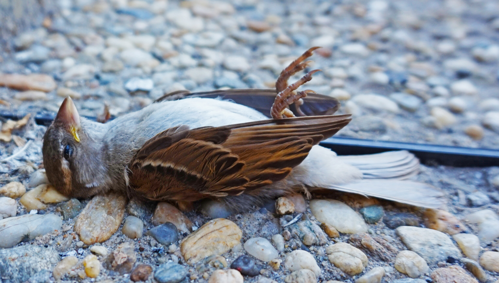

Today, birds are facing a lot of crisis:
Habitat Loss and Degradation
The expansion of agriculture, urban development, and deforestation has led to the loss and fragmentation of bird habitats. This not only reduces the space available for birds to live and breed but also affects the availability of food and nesting sites.
Climate Change
Climate change is altering habitats and the availability of food and water, shifting migratory patterns, and increasing the frequency of extreme weather events, all of which can be detrimental to bird populations. Changes in temperature and precipitation patterns affect the timing of breeding, migration, and food availability.
Pollution
Pollution in various forms poses significant risks to birds. Chemical pollution from pesticides and industrial waste can poison birds directly or disrupt their reproductive systems. Plastic pollution leads to ingestion and entanglement. Light and noise pollution affect birds' migratory patterns and behavior.
Illegal Hunting and Poaching
Despite legal protections, illegal hunting and poaching of birds persist in many areas. This is particularly true for species that are hunted for food, sport, or the pet trade.
Invasive Species
The introduction of non-native species can have devastating effects on native bird populations. Invasive predators, such as rats and snakes, can prey on birds, particularly on islands where birds may not have evolved defenses against these predators.
“Background image: Dead bird in Bucharest by Tiia Monto at https://commons.wikimedia.org/wiki/User:Kulmalukko, CC BY-SA 4.0.”
The listed crisis are not all the crisis that birds are facing. In fact, birds are facing many crisis, we need to take actions to protect them.